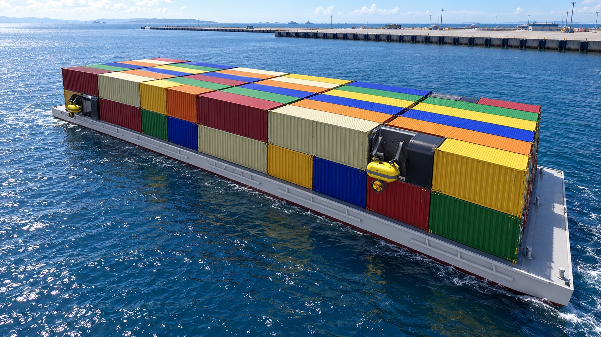
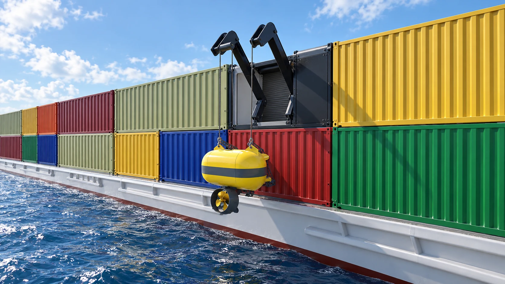

Inland operations
Assist barge manoeuvring, terminal approach and positioning in sheltered waterways.
Barges, pontoons and work platforms
Towbot adds manoeuvring and positioning capability without a fixed thruster installation, lengthy conversion or permanent loss of cargo space.

Use cases
A Towbot configuration can be mobilised on demand or for a defined project, then recovered and reassigned.
Assist barge manoeuvring, terminal approach and positioning in sheltered waterways.
Provide directional thrust to pontoons, work platforms and temporary marine infrastructure.
Share detachable units across compatible assets instead of equipping every hull permanently.
Mobilisation
Towbot deployment can be engineered from shore, a floating terminal, support vessel or purpose-designed handling system. Recovery makes inspection, maintenance and redeployment accessible.

Take the next step
Share the barge or platform particulars, intended movements and launch arrangements.
Request an application assessment ↗